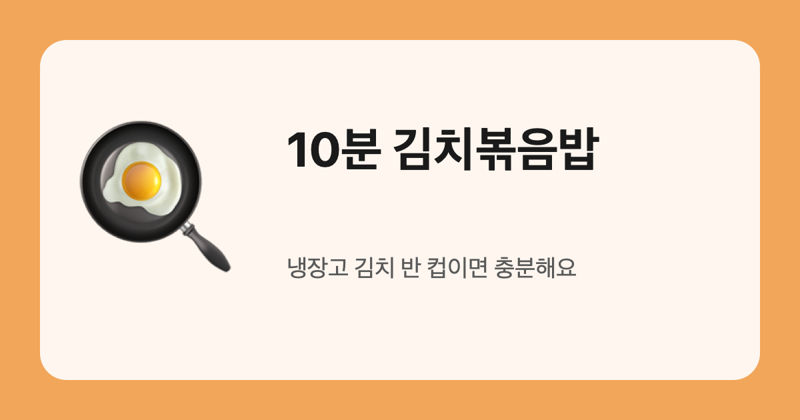

10분 김치볶음밥
냉장고 김치 반 컵이면 충분해요. 팬 하나로 끝나는 한 끼.
재료 (1인분)
- 밥 1공기
- 잘 익은 김치 반 컵(잘게 썰기)
- 대파 한 줌
- 식용유 1큰술
- 간장 1작은술, 설탕 한 꼬집
- 계란 1개, 참기름·깨 조금
만들기
- 팬에 식용유를 두르고 대파를 먼저 볶아 파기름을 내요.
- 김치를 넣고 2~3분 볶아요. 설탕 한 꼬집이 신맛을 잡아 줘요.
- 간장을 팬 가장자리에 둘러 살짝 눌린 향을 내요.
- 밥을 넣고 주걱을 세워 자르듯 섞어요.
- 불을 끄고 참기름·깨를 뿌린 뒤 계란 프라이를 올려요.
김치가 덜 익었으면 설탕은 빼요. 많이 시면 설탕을 조금 더 넣어요.